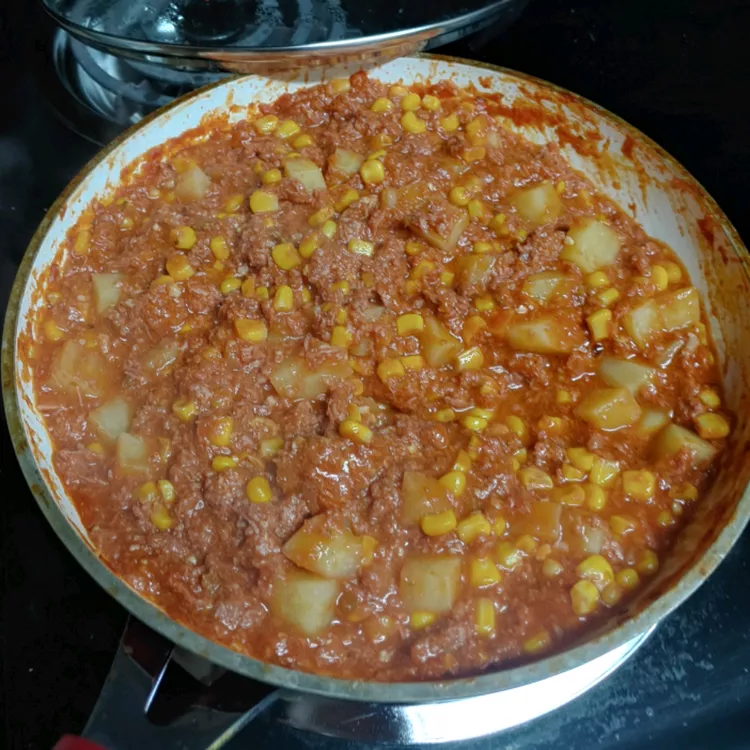

Indulge in the heartwarming flavors of a classic Corned Beef Stew that's sure to comfort and satisfy your taste buds. This hearty dish combines tender chunks of succulent corned beef, perfectly boiled potatoes, vibrant carrots, and earthy cabbage, all simmered together in a rich and savory broth. The slow-cooked corned beef infuses every bite with its signature salty and slightly peppery essence, creating a comforting harmony of flavors that's both soul-soothing and deeply satisfying. Whether you're looking for a comforting weeknight dinner or a traditional Irish feast to celebrate St. Patrick's Day, this Corned Beef Stew is a timeless favorite that will warm your heart and leave you craving seconds.
With its straightforward preparation and a medley of simple yet wholesome ingredients, this Corned Beef Stew recipe is a breeze to make. Just follow the step-by-step instructions, and in no time, you'll have a pot full of steaming goodness ready to share with friends and family. So, gather 'round the table, ladle out generous portions, and savor the comforting embrace of this hearty Corned Beef Stew – a culinary masterpiece that's sure to become a beloved addition to your family's mealtime repertoire.